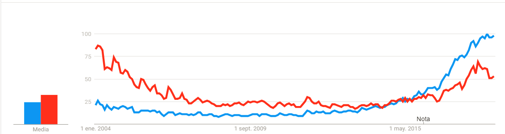

Introducción
El progreso de la teoría y modelización informática dan una gran imporatncia en la comprensión de campos de la inteligencia como:
- Ciencia Cognitiva
- Ciencia de la Información
- Conocimiento de Patrones
- Filosofía y disciplinas relacionadas.
Debido a que la capacidad de aprender es uno de lo atributos primordiales del comportamiento humano, los investigadores informáticos han tratado de imitarlo, en las máquinas.
Este tipo de investigaciones no son nueva, se dan desde la década de los 50’s, pero debido al aumento de interés en Aprendizaje Automático en los últimos años, se da a conocer este término, el cuál es la rama padre del Aprendizaje Automático, llamado Inteligencia Artificial.
Gráfica Google Trends, [ML(azul),IA(rojo)] En la que podemos ver que es cierto, se da una tendencia de Inteligencia Artificial, pero está decrece con el transcurso del tiempo, en cambio, Aprendizaje Automático se mantiene constante hasta aproximadamente el año 2014, donde tiene su bum y comienza a crecer; haciendo crecer la tendencia inicial de Inteligencia Artificial. 
Definimos el Aprendizaje como un fenómeno multifacético de procesos y conocimientos declarativos, desarrollados a través de habilidades motoras y cognitivas.
Como ya se mencionó anteriormente, desde la Era de la Informática los investigadore tratan de incrementar las capacidades del Aprendizaje dentro de las computadoras, enfocándose en un objetivo a largo alcance, desafiante y fascinante como lo es la Ingeligencia Artificial.
A continuación se da un enfoque intrínseco, a el Aprendizaje Automatico.
El gran avance de las nuevas tecnologías, y el análisis en el estudio y la modelización informática, de procesos de Aprendizaje en sus múltiples manifestaciones constituyen el Aprendizaje Automático. Aquel que contiene 3 objetivos pincipales:
1.- Estudios orientados a tareas
Donde el desarrollo y análisis de sistemas de aprendizaje mejoran el rendimiento conjunto de tareas, tomando un enfoque de Ingeniería.
2.- Simulación cognitiva
Se trata de la investigación y simulación por computador de procesos en Aprendizaje Automático.
3.- Análisis teórico
Es la exploración teórica de espacio de posibles métodos de aprendizaje y algoritmos independientes del dominio de la aplicación.
Las investigaciones psicológicas del Aprendizaje Automático puden ser combinadas por el Análisis Teórico, sugiriendo varios modelos de aprendizaje plausible.
En conclusión, la necesidad de adquirir conocimiento en un enfoque orientado a tareas, generan nuevos análisi, en el cual se trata de responder ¿Como los humanos adquieren un conocimiento o habilidad específica?
Los tres enfoques mencionados anteriormente con Aprendizaje Automático son la tricotomía de objetivos desafiantes que reflejan a la Inteligencia Artificial, donde la investigación de sistemas expertos, simulación cognitiva, estudios teóricos dan una fecundación cruzada de problemas e ideas.